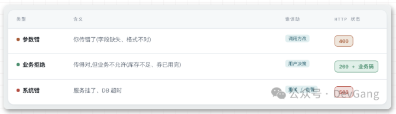
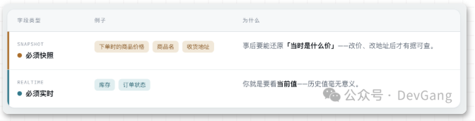
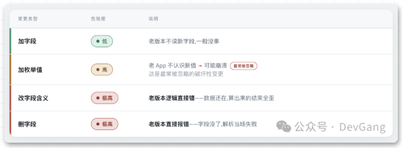
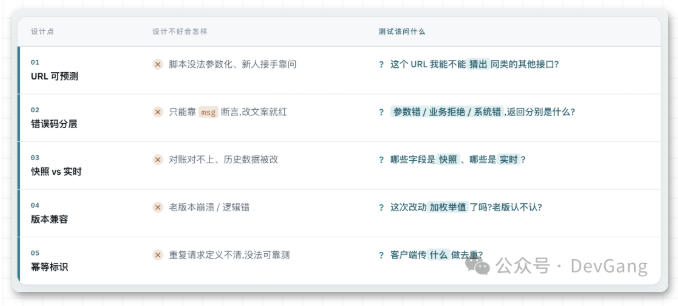

本书作者：测试开发刚哥，文章版权归个人所有，未经授权请勿转载。
错误码不分层的接口，你只能靠 msg 断言，改个文案用例就跑失败。返回快照的字段返回了实时，数据就无法核对上。
接口设计得好不好，一个重要的判断标准是：验证它麻不麻烦，也就是可测试性。
接口设计的可测试性
决策1：URL 是名词还是动词？
RESTful 到底在解决什么？我们知道GET/POST/PUT/DELETE对应查/增/改/删，它有用的地方在于，URL 描述资源、方法描述动作，你能猜出接口长什么样。
# 不好：每个接口一个动词，URL 无规律，猜不出来
"/createOrder", "/orderCancel", "/getOrderInfo"
# 好：资源 + 动作，规律可预测
"POST /orders" # 创建
"POST /orders/{id}/cancel" # 业务动作，允许不严格 REST
"GET /orders/{id}" # 查询
什么时候违反？业务动作不是CRUD：取消订单、申请退款，写成POST /orders/{id}/cancel比硬套PUT /orders/{id}更友好。
测试视角：URL 有规律，你的自动化脚本就能参数化、能批量生成用例、新人接手也能快速明白。
决策2：错误码
三类错误必须分开：

最坑的是什么都返回200：
# HTTP 状态码是 200，但 body 说失败了 —— 到底算成功还是失败？
return 200, {"code": 500, "msg": "系统繁忙"}
后果：网关认为成功不重试、监控认为健康不告警、前端不知道该不该重试。你的用例也会误判，明明失败了，断言 HTTP 200 却过了。
三种错误的返回对比：
# 参数错：调用方的锅
return 400, {"code": "INVALID_PARAM", "msg": "count 必须大于 0"}
# 业务拒绝：传对了，但业务不允许 —— HTTP 仍是 200
return 200, {"code": "STOCK_NOT_ENOUGH", "msg": "库存不足"}
# 系统错：我的锅，你得重试
return 500, {"code": "INTERNAL_ERROR", "msg": "服务异常"}
测试视角：断言 code，永远别断言 msg。更重要的是：这些失败场景我怎么造？
- 库存不足怎么造？（把库存改成 0？有没有隐藏库存？）
- 券过期怎么造？（能改有效期吗？还是要等它自然过期？）
- 支付失败怎么造？（有没有挡板？要不要真实小额支付？）
决策3：快照 vs 实时

判断依据：这个值变了算不算问题？变了算问题→快照（价格、商品名、地址）；变了才正常→实时（库存、状态）。
有个常见的坑：应该快照的返回了实时。比如运营改价 99→89，历史订单详情页重新查商品价格→显示 89，但用户实付 99→账对不上。
{
"order_id": "20260914001",
"sku_name": "xxx 商品", # 快照：下单时的名字，之后改名不影响
"price": 99.00, # 快照：下单时的价格，之后改价不影响
"stock_left": 5, # 实时：当前剩余库存
"status": "WAIT_PAY" # 实时：当前状态
}
测试视角：这个字段源头改了之后，该跟着变还是不变，最好一开始就跟研发确认清楚。不只是价格，收货地址（用户改了地址，历史订单不能跟着变）、商品名（下架改名后订单还得能看）、优惠券信息（券删了订单还得显示用了什么券）都要快照。
决策4：版本兼容

结论：加字段尽量兼容；加枚举值要按破坏性变更处理；删/改必须走版本。
RPC接口还要注意序列化问题，新增字段放在最后追加，如果放中间可能序列化报错。
例子：加个枚举值后影响历史功能：
# v1 订单状态：WAIT_PAY / PAID / DONE
# v2 加了："PARTIAL_REFUNDED" 部分退款
# 老 App 的写法：不是 DONE 就显示"待处理"
if status != "DONE": show("待处理")
# 结果：部分退款的订单，老 App 一直显示"待处理" → 用户投诉
测试视角：兼容性用例要按版本号驱动——你的自动化里必须有"老版本 App + 新接口"这一组。
决策5：幂等
服务端不该猜"这两个请求是不是同一个"（靠参数比对、靠时间窗都不靠谱），得客户端明确传一个幂等标识。
# 客户端生成，全局唯一，同一次操作重试用同一个
{"request_id": "a1b2c3-xxxx", "sku_id": 1001, "count": 2}
服务端拿 request_id 做去重键，第一次处理，之后直接返回首次结果。第二次返回必须跟第一次一模一样，具体做法在第3篇介绍。
测试视角：有了幂等标识，你才能可靠地造重复请求——把同一个 request_id 发两次就是重试，换一个就是新请求。
二、汇总表

三、结尾
以后接手一个接口，再搞懂3个问题：
- 它的错误码，能让我一眼分清"我传错了 / 业务不允许 / 服务挂了"吗？
- 返回里哪些是快照、哪些是实时？
- 我能不能造出它的失败场景？
下一篇介绍幂等。“重复"和"并发"是两回事，大多数所谓的幂等，只防得住重复，防不住并发。